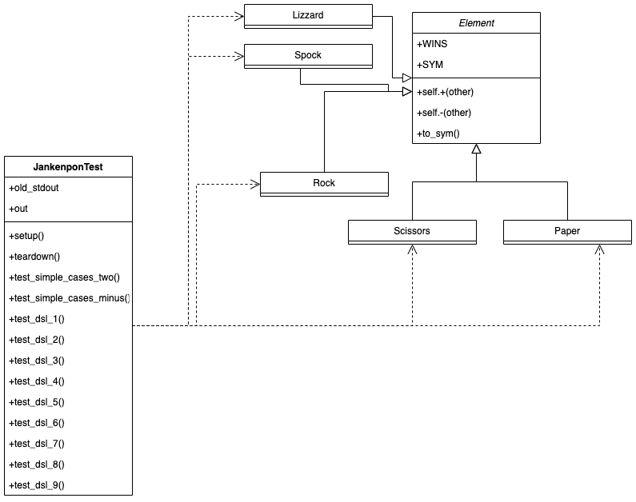

Domain Specific Language (DSL) pattern¶ ↑
This documentation was developed as part of a programming activity for the Software Design and Architecture course (Tc3049), at the Tecnológico de Monterrey, Campus Estado de México.
Authors¶ ↑
-
A01747290 Diego Palmerin
-
A01748354 Fernando Melgar
Overview¶ ↑
A DSL is a programming language that is targeted at a specific problem. It may be derived for a more general-purpouse language, but because is more specific, its easier to learn. It contains the syntax and semantics that model concepts at the same level of abstration that the problem domain offers. Using asbraction, the DSL pattern enables us to focus on the core aspects of a subject ignoring the unnesesary details. A well-designed DSL gives you the flexibilbity of composition in the solution domain. A DSL is targeted at a specific problem area. A DSL contains syntax and semantics that model concepts at the same level of abstraction as the problem domain does. Martin Fowler mentiions in his 2009 DSL Developer’s Conference keynote talk that ‘[…], it’s this limited expressivity that differentiates a DSL from a general-purpose programming language. You can model everything with a general-purpose programming language. With a DSL, you can model only one specific domain, but in a more expressive way’. There are two kinds of DSL: externals and internals. An external DSL is a domian-specific language represented in a separete language to the main programming language it’s working with. An internal DSL is a DSL represented with-in the syntax of a general purpose language, it’s a stylized use of that language for a domian-specific purpose. A DSL has a declarative flow instead of an imperative one.
The UML diagram for this programming activity is as follows:

To test the program, inside the src folder type the following instruction at the command line:
ruby jankenpon_test.rb
References¶ ↑
-
Ruby-Doc.org. RDoc Markup Reference. http://ruby-doc.org/stdlib-2.4.1/libdoc/rdoc/rdoc/RDoc/Markup.html Accessed April 26 , 2022.
-
Oreilly. Domain Specific Language http://learning.oreilly.com/library/view/domain-specific-languages/9780132107549/ Accessed April 26, 2022.